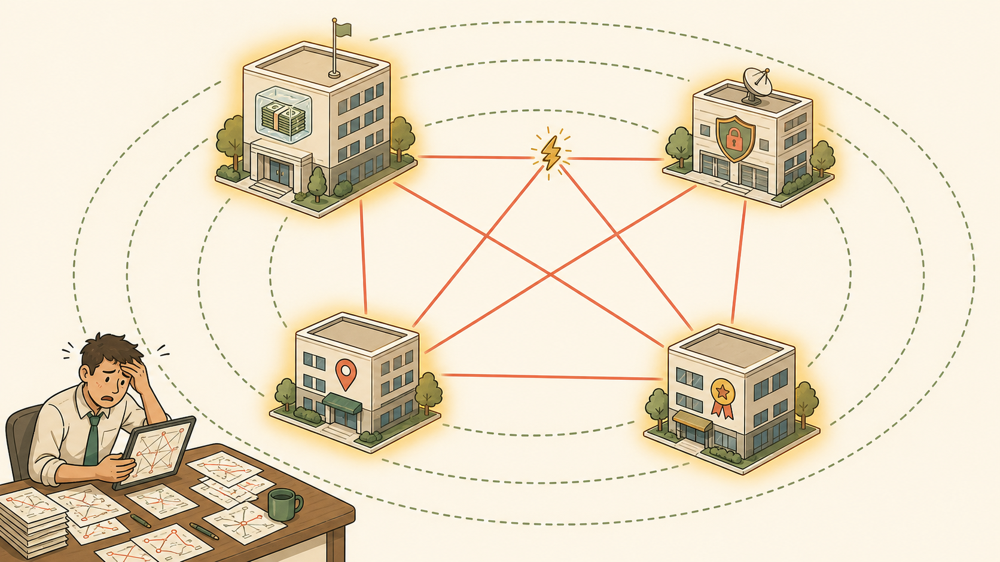
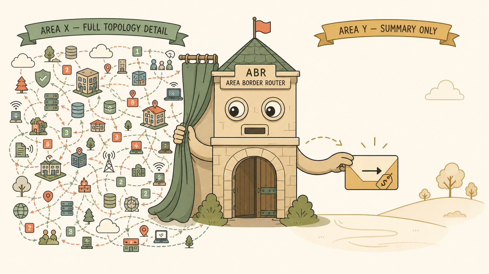
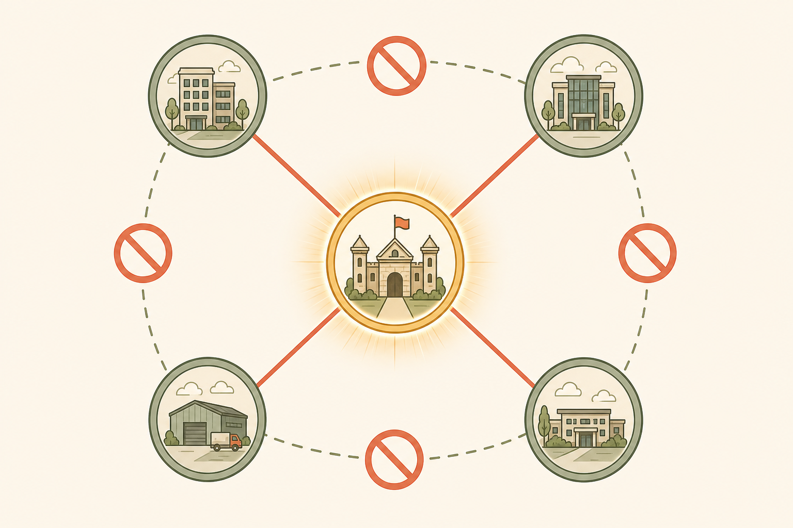

Why this visual style
Session 14's core ideas — areas, ABRs, the mandatory backbone hub — are fundamentally spatial and topological, not process-sequential. An Enterprise Topology Map lets you see the hub-and-spoke shape directly (which is the entire point of the backbone rule), while a small inset Process Flow panel captures the "detail in, summary out" transformation happening at each ABR. Three image placeholders below build this in layers: the scaling problem, the area/ABR fix, and the backbone hub rule.
1. The Scaling Problem — One Flat Map, Company-Wide
16:9

Image not yet generated — see prompt below
Purpose
Anchor the "why areas exist" reasoning before showing the fix — this image should make the blast-radius problem feel physically obvious.
Placement
Early in the page, immediately after the style note, before the ABR/area fix visual.
Accessibility description
A flat-style illustrated map showing four LoFinance office buildings (HQ, DR, Parramatta, Chatswood) connected by a single shared web of lines with no boundaries between them, with a small red spark icon at one connection to indicate a single link change, and faint radiating rings spreading out from that spark to touch every single building on the map — indicating one small change forces every site to recalculate.
Image Generation Prompt
Flat, minimalistic but highly detailed vector-art illustration in a modern storybook-diagram style. Cream/warm off-white background (#faf5e9). Composition: an aerial, isometric-lite illustrated map of four small stylized office buildings labeled subtly with icons (not dense text) representing LoFinance HQ, DR site, Parramatta branch, and the new Chatswood branch, arranged in a loose square across the canvas. All four buildings are connected directly to EACH OTHER by a dense, tangled web of thin coral-colored lines (every building touches every other building directly — a flat, non-hierarchical mesh). Somewhere on one of the connecting lines, place a small stylized amber "spark" or "crack" icon indicating a single change event. From that spark, draw three or four faint, soft-edged concentric rings (like ripples in water, rendered as thin dashed sage-green circles) expanding outward until they touch and highlight ALL FOUR buildings simultaneously with a soft golden glow — visually showing that one small event affects the entire map at once. Include one small figure in the corner — a neat, competent-looking engineer character (the "Intermediate Engineer," LoFinance's protagonist) standing at a desk, looking at a tablet or printout with a slightly overwhelmed expression, one hand on their forehead, papers with small route-like squiggly lines scattered around them suggesting the 47 static routes. Style: clean bold line work, no gradients, no photorealism, no 3D rendering, muted gold highlights, sage green ripple rings, coral connection lines, soft brown outlines, generous negative space, professional but storybook-like — should function as an educational diagram, not decoration. Do NOT include dense technical labels, IP addresses, or readable text of any kind on the buildings. Do NOT include any real company logos or branding other than a small, simple frozen-ice-cube-with-cash motif on the HQ building (LoFinance's own branding). Learning purpose: this image reinforces WHY a flat, non-hierarchical network topology creates a company-wide blast radius from a single local change — the visual should make the ripple-touches-everything effect immediately intuitive without needing any technical labels.
2. Areas & the ABR — Detail In, Summary Out
16:9

Image not yet generated — see prompt below
Purpose
Reinforce the ABR's exact mechanism: full detail retained locally, only a stripped summary crosses the boundary. This is the single most re-derived concept of the session and deserves a visual anchor.
Placement
Directly beside the "Areas — Containing the Blast Radius" section of the complete guide / immediately after Visual 1 on this page.
Accessibility description
A cutaway illustration of a router-shaped gatehouse standing between two clearly bounded zones, with dense colorful "detail" objects visible only on the near side and a single small labeled envelope crossing to the far side.
Image Generation Prompt
Flat, minimalistic but highly detailed vector-art illustration, modern storybook-diagram aesthetic, cream/warm off-white background (#faf5e9), no gradients, no photorealism. Composition: a wide horizontal scene split into two clearly bounded regions by a tall, friendly-looking gatehouse/checkpoint structure in the center, styled like a small stylized network-router character-building with a simple face-like front (two round "window eyes," a small rectangular "mouth" slot) — this represents the Area Border Router (ABR). On the LEFT side of the gatehouse, densely packed, colorful, varied small icons — tiny building icons, tiny connecting line squiggles, small cloud shapes, numbered tags — all in sage green and coral, representing "Area 2" and its full rich topology detail, visually busy and information-dense. On the RIGHT side of the gatehouse, a much sparser, calmer space in muted gold and cream tones, containing only ONE small stylized envelope or note-card icon with a simple arrow and a small dollar-sign-free price/cost tag symbol on it, floating toward the right — representing the single Type 3 summary LSA (prefix + cost only) that crosses the boundary. The gatehouse figure has one hand-like extension holding back a curtain of the dense left-side detail, and the other hand-like extension gently placing the single summary envelope onto the right side — visually dramatizing "keeps the mess here, sends only the summary there." Soft brown outlines throughout, generous spacing, clean bold line work. Do NOT show readable IP addresses, subnet masks, or dense technical text — icons and shapes only. Do NOT make the gatehouse figure look like a real branded router product. Learning purpose: this image is the visual anchor for the ABR's exact function — full detail retained on the area side, only a compressed summary crossing the boundary — reinforcing the "detail in, summary out" mental model from the session.
3. The Backbone Hub Rule — No Shortcuts Allowed
3:2

Image not yet generated — see prompt below
Purpose
Cement the structural loop-prevention insight the student worked hardest for this session: forbidden direct area-to-area shortcuts vs. the mandatory hub-and-spoke shape through Area 0.
Placement
Alongside "The Backbone Rule" section, immediately after Visual 2.
Accessibility description
A hub-and-spoke wheel diagram with a central hub labeled conceptually as "0" and four numbered spoke areas around it, with a single tempting-looking but crossed-out direct shortcut line drawn between two spokes.
Image Generation Prompt
Flat, minimalistic, highly detailed vector-art illustration, cream/warm off-white background (#faf5e9), storybook-diagram aesthetic, no gradients, no photorealism, no 3D rendering. Composition: a clean, symmetrical hub-and-spoke wheel diagram viewed from directly above (flat top-down layout). At the exact center, a single glowing golden-outlined circular hub shape, larger than the other nodes, softly radiating a warm gold light — this represents the mandatory Backbone Area. Around it, arranged evenly like spokes on a wheel, four smaller sage-green circular nodes represent the numbered areas, each connected to the central hub by a solid, confident coral-colored line. Between two of the spoke nodes (any two adjacent ones), draw a single dashed, faded-out line attempting to connect them DIRECTLY to each other, bypassing the hub — and overlay a simple, bold, universally recognizable "forbidden" red circle-with-diagonal-slash icon directly on top of that dashed shortcut line, clearly marking it as not allowed. Include small simple iconography inside each spoke node hinting at LoFinance sites (a tiny building silhouette) without any readable text or labels. Soft brown outlines, generous negative space, clean bold line work, gentle visual hierarchy drawing the eye first to the glowing central hub, then to the forbidden shortcut. Do NOT include any technical text, IP addressing, or area numbers as literal readable digits — use simple shape-based visual hierarchy instead (larger/glowing = hub, smaller = spokes). Do NOT depict any real branded network hardware. Learning purpose: this image is the visual anchor for the mandatory hub-and-spoke OSPF area topology — every area must connect through the backbone, and direct area-to-area shortcuts are structurally forbidden, not just discouraged.